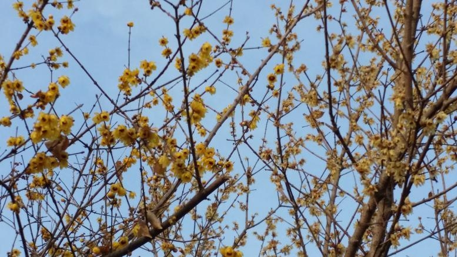

苹 謌风起于青苹之末， 狂来放謌自谴乐。
腊梅傲寒
2016-01-23
寒潮袭来雨雪飘，
阵阵北风呜呜啸。
风卷枯叶凛年关，
四九腊梅滿枝傲。
（2016.01.23 大风吹的“呼呼”响，广元的风却是“呜呜”的叫声）

大气之福
2016-01-02
拥坦荡之心，
养浩然之气。
立天地之间，
成大器之概。
（2016.1.2 读《大气之人,必有大福气!》）
辞旧迎新
2016-01-01
匆匆 2015 去， 过往忆心底。
茫茫 2016 里， 万事兴如意。
赏《鸿雁》曲之随想
2015-12-01
听鸿雁，琴声颤，
余音悠扬绕梁环。
向南望，影去远，
遥想过往北风寒。
对酒当歌忧万千，
一曲思念荡心田。
（2015.12.01.赏《小提琴版<鸿雁>,美得难以置信》 之随想。百听不厌,醉了……）
命运定人生
2015-11-20
责任经历性格定，
简单复杂用心赢。
自信开拓执着者，
把握命运好人生。
茶 道
2015-11-07
習茶道道功，
茗香青青浓。
壺生滚滚流，
味品杯杯中。
（2015.11.07 读《喝茶十三道,道道是精华》 茶道如是,人生亦然）
瞬世行
2015-11-03
流年似水转瞬逝，
岁月如歌跌宕姿。
生命航程杨帆起，
风雨人生正当时。
（2015.11.03 读《转眼就是一年,转瞬就是一辈子》）
故乡赞
2015-10-19
上有天堂，
下有旺苍。
走遍天涯，
最美家乡。
（2015.10.19.看《今天才发现,去了一趟旺苍就等于去了全世界……》）
感悟人生路
2015-09-29
漫漫人生路， 行走山水间。
万里途遥艰， 读书万卷助。
做人似若水， 做事能如山。
依山傍水乎， 脚踏实地步。
（2015.09.29 阅《老子:做人如水,做事如山》）
赏月缘
2015-09-27
中秋之夜赏明月， 把饼邀月与君嚼。
笑语欢歌起翩舞， 同祝共愿缘聚福。
他乡亲朋最亲人， 此时醉为遥想映。
举目望月历历影， 地久天长寄深情。
（2015.09.27 中秋节之夜赏月有感）
Page 2 of 3